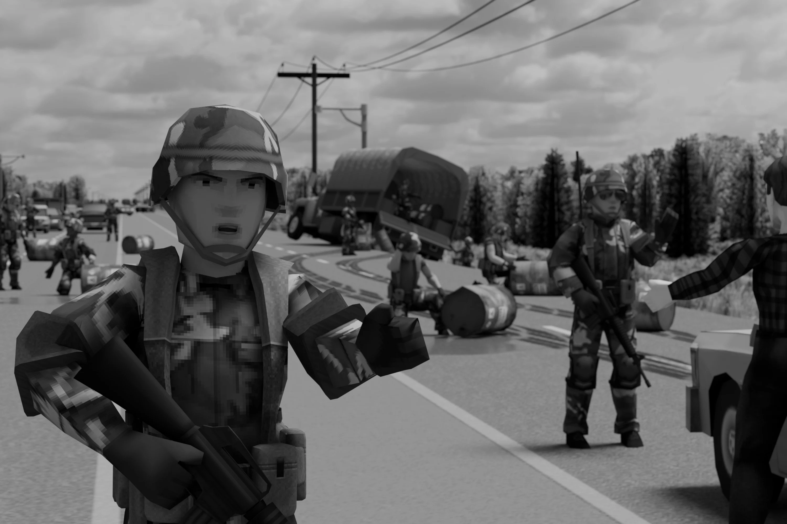
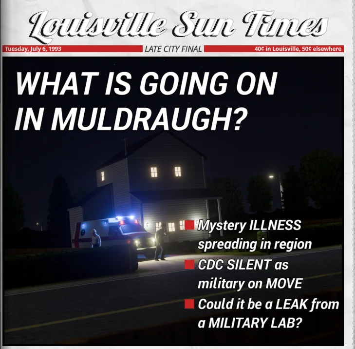
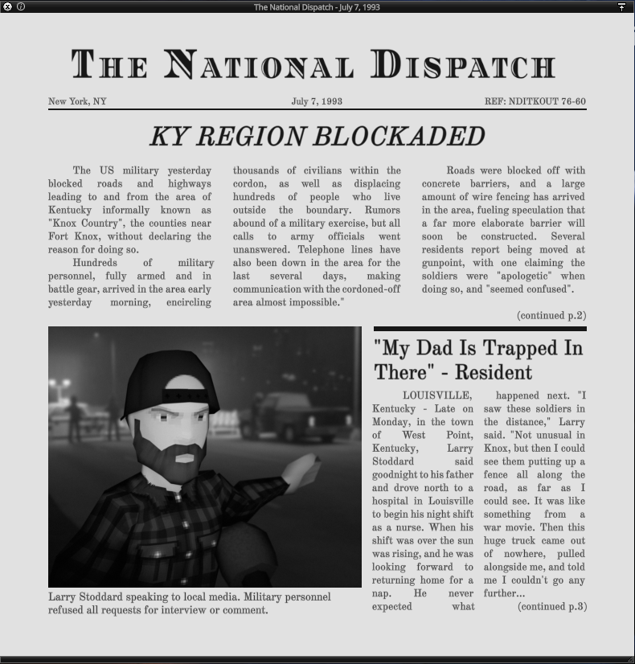
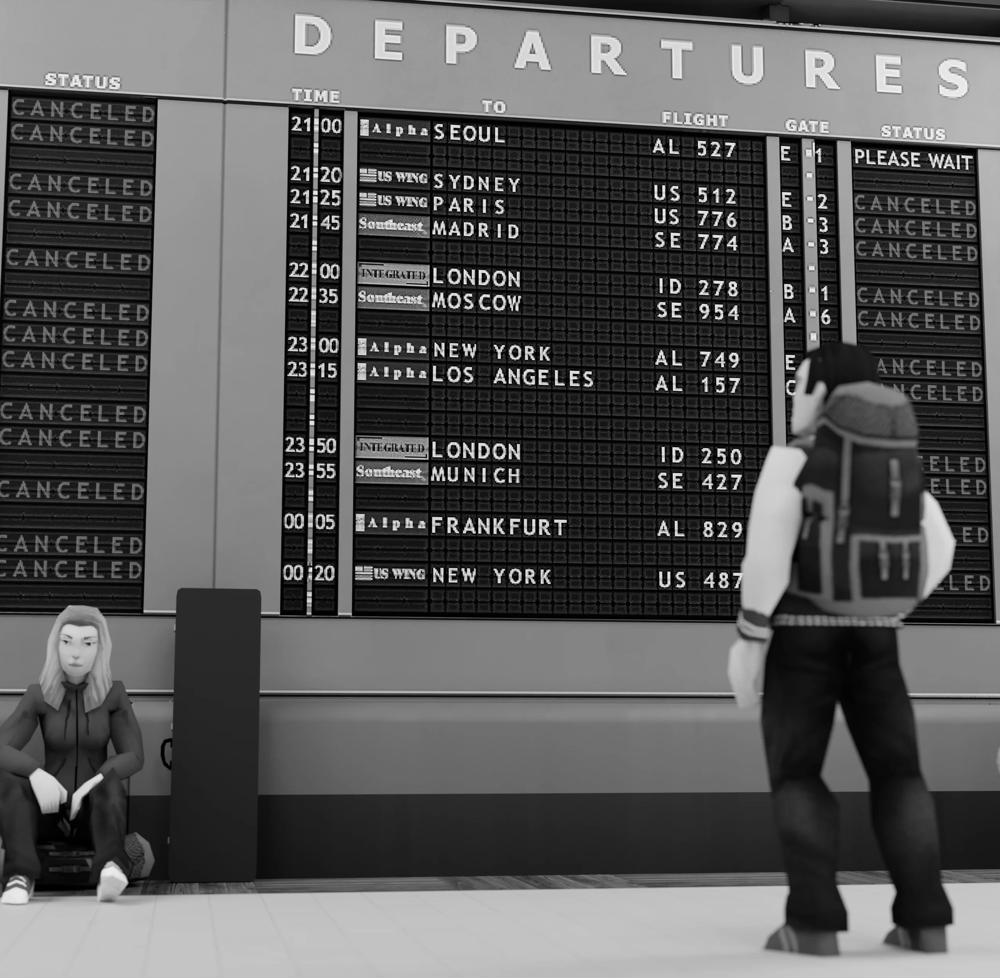
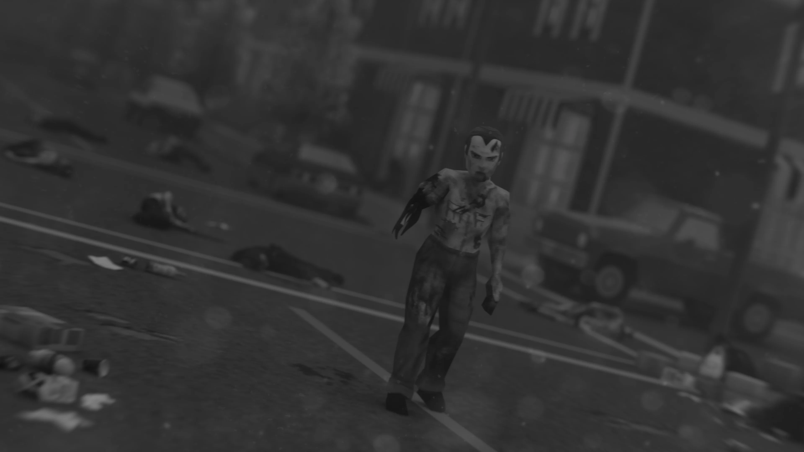
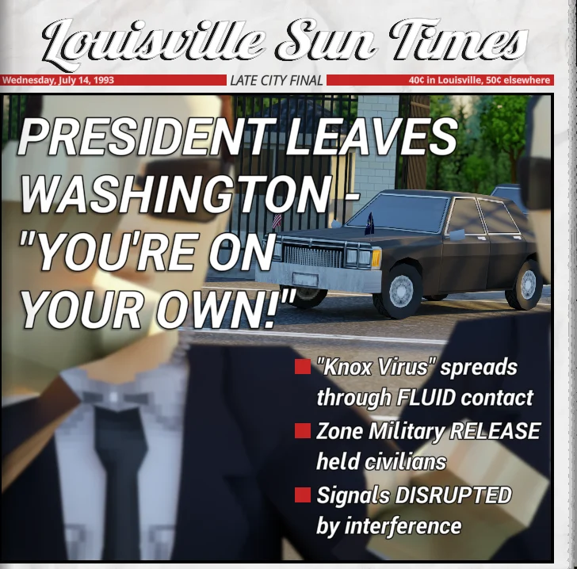
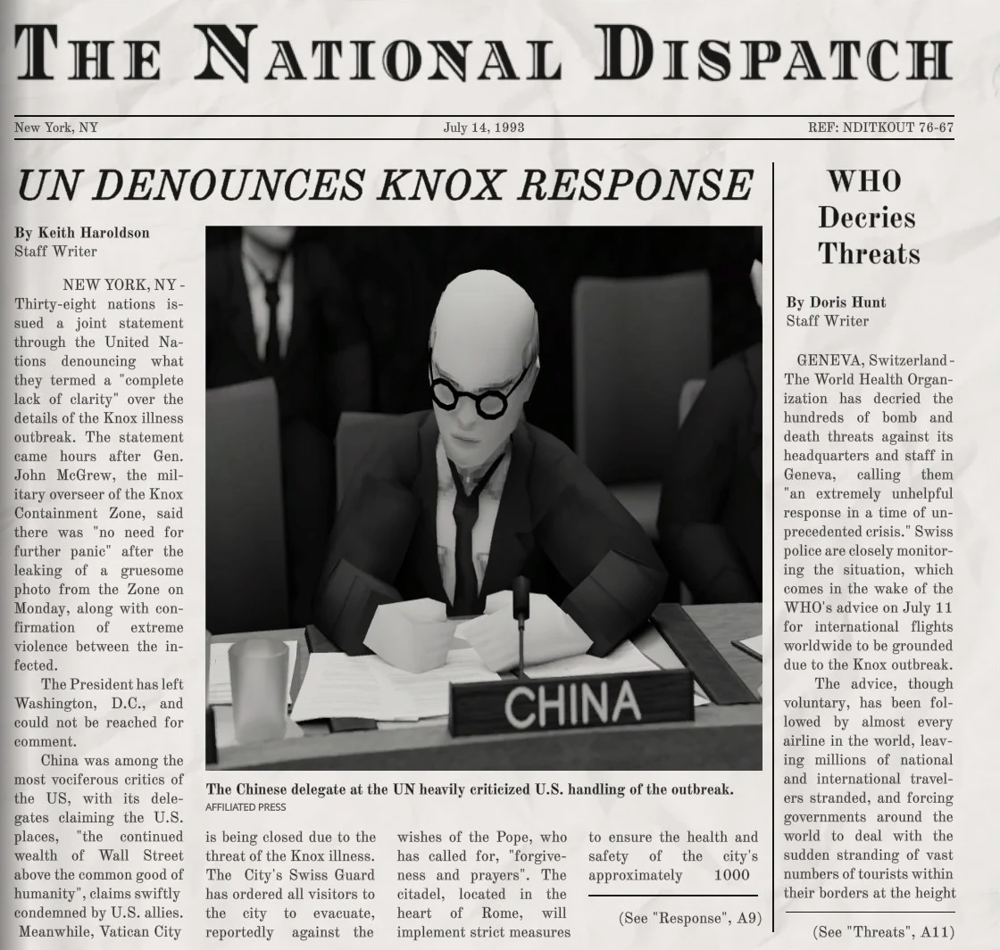
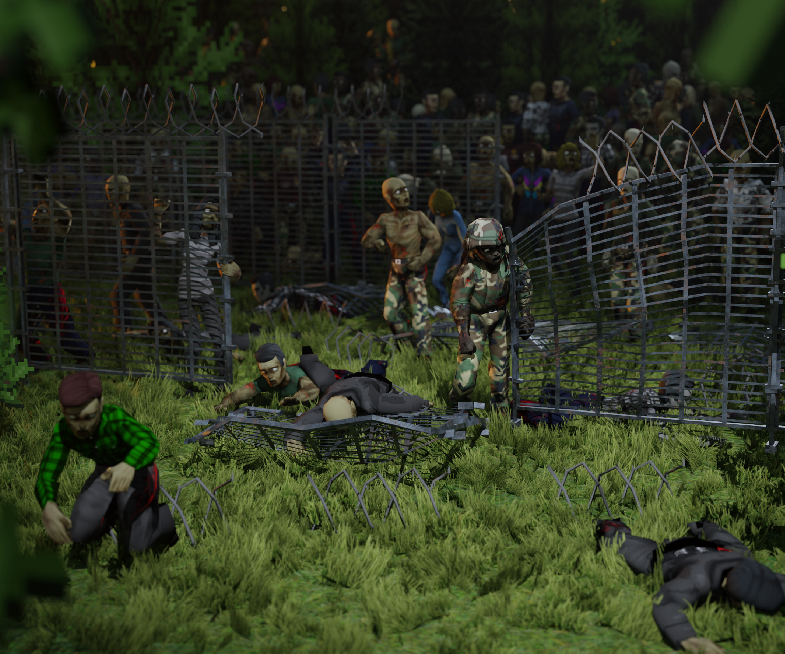
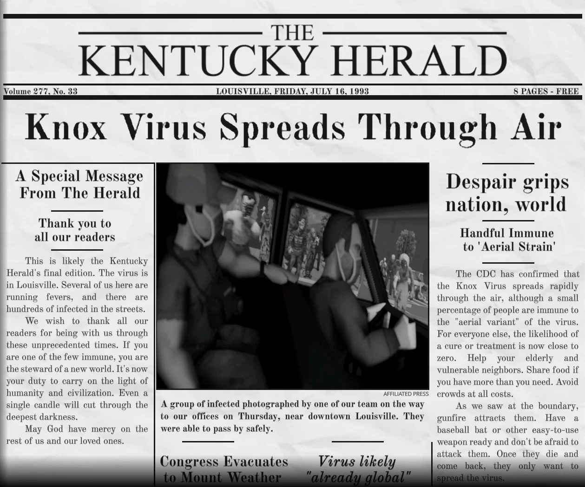
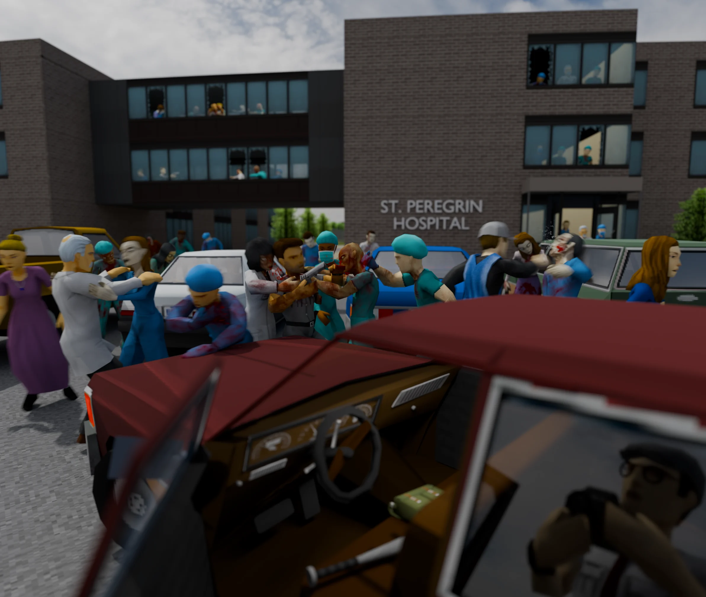

Un camión militar que transportaba una sustancia peligrosa desconocida choca cerca de March Ridge. El personal militar sella la zona rápidamente y evita que civiles y periodistas se acerquen.

Los periódicos locales comienzan a reportar una extraña enfermedad en Muldraugh. El ejército bloquea las carreteras de la zona sin dar explicaciones, marcando el inicio de la Evacuación de Knox.

La prensa nacional confirma el bloqueo total de la región de Knox. Los residentes cercanos son desplazados y las comunicaciones dentro de la zona quedan completamente cortadas.

La Organización Mundial de la Salud pide que se detengan todos los vuelos no militares del planeta. Comienza el pánico de compra en Estados Unidos y los mercados bursátiles se desploman.

Una fotografía tomada en West Point, mostrando a un hombre desmembrado pero aún con vida entre cadáveres, se vuelve viral. El Louisville Sun Times la publica sin censura, llamando a las víctimas "cadáveres andantes".

El Presidente abandona Washington en medio de multitudes furiosas. La ONU emite una declaración conjunta de 38 países, criticando la falta de transparencia del gobierno estadounidense sobre el Evento Knox.


Batallas intensas durante la noche cerca del campamento fronterizo no logran detener el avance de los infectados. El ejército comienza a replegarse hacia el norte.

La mayoría de la población de Louisville está infectada y los hospitales, como el St. Peregrin, colapsan por completo. El ejército destruye los puentes sobre el río Ohio en un intento desesperado por contener el avance.

